가스기사 (2021-05-15 기출문제)
1과목: 가스유체역학
1. 다음과 같은 일반적인 베르누이의 정리에 적용되는 조건이 아닌 것은?
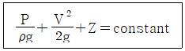
- 정상 상태의 흐름이다.
- 마찰이 없는 흐름이다.
- 직선관에서만의 흐름이다.
- 같은 유선상에 있는 흐름이다.
(정답률: 77%)

2. 압력계의 눈금이 1.2MPa를 나타내고 있으며 대기압이 720mmHg 일 때 절대압력은 몇 kPa 인가?
- 720
- 1200
- 1296
- 1301
(정답률: 65%)
3. 냇물을 건널 때 안전을 위하여 일반적으로 물의 폭이 넓은 곳으로 건너간다. 그 이유는 폭이 넓은 곳에서는 유속이 느리기 때문이다. 이는 다음 중 어느 원리와 가장 관계가 깊은가?
- 연속방정식
- 운동량방정식
- 베르누이의 방정식
- 오일러의 운동방정식
(정답률: 62%)
4. 수차의 효율을 η, 수차의 실제 출력을 L[PS], 수량을 Q[m3/s]라 할 때, 유효낙차 H[m]를 구하는 식은?
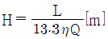
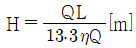
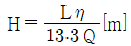
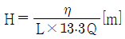
(정답률: 60%)
5. 펌프의 회전수를 n[rpm], 유량을 Q[m3/min], 양정을 H[m]라 할 때 펌프의 비교회전도 ns를 구하는 식은?
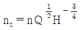
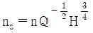
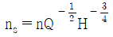
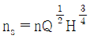
(정답률: 57%)
6. 원관 내 유체의 흐름에 대한 설명 중 틀린 것은?
- 일반적으로 층류는 레이놀즈수가 약 2100 이하인 흐름이다.
- 일반적으로 난류는 레이놀즈수가 약 4000 이상인 흐름이다.
- 일반적으로 관 중심부의 유속은 평균유속보다 빠르다.
- 일반적으로 최대속도에 대한 평균속도의 비는 난류가 층류보다 작다.
(정답률: 76%)
7. 내경이 2.5×10-3m인 원관에 0.3m/s 의 평균 속도로 유체가 흐를 때 유량은 약 몇 m3/s 인가?
- 1.06 × 10-6
- 1.47 × 10-6
- 2.47 × 10-6
- 5.23 × 10-6
(정답률: 65%)
8. 간격이 좁은 2개의 연직 평판을 물속에 세웠을 때 모세관현상의 관계식으로 맞는 것은? (단, 두 개의 연직 평판의 간격 : t, 표면장력 : σ, 접촉각 : β, 물의 비중량 : γ, 액면의 상승높이 : hc 이다.)
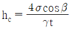
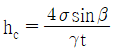
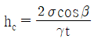
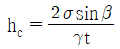
(정답률: 58%)
9. 원관을 통하여 계량수조에 10분 동안 2000kg의 물을 이송한다. 원관의 내경을 500mm로 할 때 평균 유속은 약 몇 m/s 인가? (단, 물의 비중은 1.0 이다.)
- 0.27
- 0.027
- 0.17
- 0.017
(정답률: 46%)
10. 표준대기에 개방된 탱크에 물이 채워져 있다. 수면에서 2m 깊이의 지점에서 받는 절대압력은 몇 kgf/cm2 인가?
- 0.03
- 1.033
- 1.23
- 1.92
(정답률: 52%)
11. 수직 충격파가 발생될 때 나타나는 현상은?
- 압력, 마하수, 엔트로피가 증가한다.
- 압력은 증가하고, 엔트로피와 마하수는 감소한다.
- 압력과 엔트로피가 증가하고 마하수는 감소한다.
- 압력과 마하수는 증가하고 엔트로피는 감소한다.
(정답률: 69%)
12. 구가 유체 속을 자유낙하 할 때 받는 항력 F가 점성계수 μ, 지름 D, 속도 V의 함수로 주어진다. 이 물리량들 사이의 관계식을 무차원으로 나타내고자 할 때 차원해석에 의하면 몇 개의 무차원수로 나타낼 수 있는가?
- 1
- 2
- 3
- 4
(정답률: 63%)
13. 단면적이 변하는 관로를 비압축성 유체가 흐르고 있다. 지름이 15cm인 단면에서의 평균속도가 4m/s 이면 지름이 20cm 인 단면에서의 평균속도는 몇 m/s 인가?
- 1.⑤
- 1.25
- 2.⑤
- 2.25
(정답률: 56%)
14. 강관 속을 물이 흐를 때 넓이 250cm2에 걸리는 전단력이 2N 이라면 전단응력은 몇 kg/m·s2인가?
- 0.4
- 0.8
- 40
- 80
(정답률: 43%)
15. 전양정 15m, 송출량 0.02m3/s, 효율 85%인 펌프로 물을 수송할 때 축동력은 몇 마력인가?
- 2.8 PS
- 3.5 PS
- 4.7 PS
- 5.4 PS
(정답률: 52%)
16. 어떤 유체의 운동문제에 8개의 변수가 관계되고 있다. 이 8개의 변수에 포함되는 기본 차원이 질량 M, 길이 L, 시간 T일 때 π정리로서 차원해석을 한다면 몇 개의 독립적인 무차원량 π를 얻을 수 있는가?
- 3개
- 5개
- 8개
- 11개
(정답률: 72%)
17. 그림은 회전수가 일정할 경우의 펌프의 특성곡선이다. 효율곡선에 해당하는 것은?
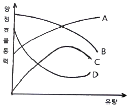
- A
- B
- C
- D
(정답률: 71%)
18. 그림과 같이 비중이 0.85인 기름과 물이 층을 이루며 뚜껑이 열린 용기에 채워져 있다. 물의 가장 낮은 밑바닥에서 받는 게이지 압력은 얼마인가? (단, 물의 밀도는 1000 kg/m3 이다.)
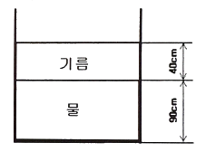
- 3.33 kPa
- 7.45 kPa
- 10.8 kPa
- 12.2 kPa
(정답률: 54%)
19. 압력이 100 kPa 이고 온도가 30℃인 질소(R = 0.26 kJ/kg·K)의 밀도(kg/m3)는?
- 1.02
- 1.27
- 1.42
- 1.64
(정답률: 61%)
20. 온도 20℃의 이상기체가 수평으로 놓인 관 내부를 흐르고 있다. 유동 중에 놓인 작은 물체의 코에서의 정체온도(stagnation temperature)가 Ts = 40℃ 이면 관에서의 기체의 속도(m/s)는? (단, 기체의 정압비열 cp = 1040 J/(kg·K)이고, 등엔트로피 유동이라고 가정한다.)
- 204
- 217
- 237
- 253
(정답률: 28%)
2과목: 연소공학
21. 다음 보기에서 설명하는 가스폭발 위험성 평가기법은?
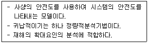
- FHA(Fault Hazard Analysis)
- JSA(Job Safety Analysis)
- EVP(Extreme Value Projection)
- ETA(Event Tree Analysis)
(정답률: 62%)
22. 랭킨 사이클의 과정은?
- 정압가열 → 단열팽창 → 정압방열 → 단열압축
- 정압가역 → 단열압축 → 정압방열 → 단열팽창
- 등온팽창 → 단열팽창 → 등온압축 → 단열압축
- 등온팽창 → 단열압축 → 등온압축 → 단열팽창
(정답률: 60%)
23. 에틸렌(Ethylene) 1Sm3을 완전 연소시키는데 필요한 공기의 양은 약 몇 Sm3 인가? (단, 공기 중의 산소 및 질소의 함량 21v%, 79v% 이다.)
- 9.5
- 11.9
- 14.3
- 19.0
(정답률: 48%)
24. 가스의 연소속도에 영향을 미치는 인자에 대한 설명 중 틀린 것은?
- 연소속도는 일반적으로 이론혼합비보다 약간 과농한 혼합비에서 최대가 된다.
- 층류연소 속도는 초기온도와 상승에 따라 증가한다.
- 연소속도와 압력의존성이 매우 커 고압에서 급격한 연소가 일어난다.
- 이산화탄소를 첨가하면 연소범위가 좁아진다.
(정답률: 47%)
25. 418.6 kJ/kg의 내부에너지를 갖는 20℃의 공기 10kg이 탱크 안에 들어있다. 공기의 내부에너지가 502.3 kJ/kg 으로 증가할 때까지 가열하였을 경우 이때의 열량변화는 약 몇 kJ 인가?
- 775
- 793
- 837
- 893
(정답률: 54%)
26. 프로판 1Sm3을 공기과잉률 1.2로 완전 연소시켰을 때 발생하는 건연소 가스량은 약 몇 Sm3 인가?
- 28.8
- 26.6
- 24.5
- 21.1
(정답률: 43%)
27. 증기원동기의 가장 기본이 되는 동력사이클은?
- 사바테(Sabathe)사이클
- 랭킨(Rankine)사이클
- 디젤(Diesel)사이클
- 오토(Otto)사이클
(정답률: 65%)
28. 가연물이 되기 쉬운 조건이 아닌 것은?
- 열전도율이 작다.
- 활성화에너지가 크다.
- 산소와 친화력이 크다.
- 가연물의 표면적이 크다.
(정답률: 62%)
29. 순수한 물질에서 압력을 일정하게 유지하면서 엔트로피를 증가시킬 때 엔탈피는 어떻게 되는가?
- 증가한다.
- 감소한다.
- 변함없다.
- 경우에 따라 다르다.
(정답률: 57%)
30. 다음 중 가역과정이라고 할 수 있는 것은?
- Carnot 순환
- 연료의 완전연소
- 관내의 유체의 흐름
- 실린더 내에서의 급격한 팽창
(정답률: 63%)
31. 임계압력을 가장 잘 표현한 것은?
- 액체가 증발하기 시작할 때의 압력을 말한다.
- 액체가 비등점에 도달했을 때의 압력을 말한다.
- 액체, 기체, 고체가 공존할 수 있는 최소압력을 말한다.
- 임계온도에서 기체를 액화시키는데 필요한 최저의 압력을 말한다.
(정답률: 58%)
32. 최소산소농도(MOC)와 이너팅(Inerting)에 대한 설명으로 틀린 것은?
- LFL(연소하한계)은 공기 중의 산소량을 기준으로 한다.
- 화염을 전파하기 위해서는 최소한의 산소농도가 요구된다.
- 폭발 및 화재는 연료의 농도에 관계없이 산소의 농도를 감소시킴으로서 방지할 수 있다.
- MOC값은 연소방정식 중 산소의 양론계수와 LFL(연소하한계)의 곱을 이용하여 추산할 수 있다.
(정답률: 52%)
33. 파라핀계 탄화수소의 탄소수 증가에 따른 일반적인 성질변화에 옳지 않은 것은?
- 인화점이 높아진다.
- 착화점이 높아진다.
- 연소범위가 좁아진다.
- 발열량(kcal/m3)이 커진다.
(정답률: 47%)
34. 어느 카르노 사이클이 103℃와 –23℃에서 작동이 되고 있을 때 열펌프의 성적계수는 약 얼마인가?
- 3.5
- 3
- 2
- 0.5
(정답률: 48%)
35. 표면연소에 대하여 가장 옳게 설명한 것은?
- 오일이 표면에서 연소하는 상태
- 고체 연료가 화염을 길게 내면서 연소하는 상태
- 화염의 외부 표면에 산소가 접촉하여 연소하는 상태
- 적열된 코크스 또는 숯의 표면에 산소가 접촉하여 연소하는 상태
(정답률: 71%)
36. 자연 상태의 물질을 어떤 과정(Process)을 통해 화학적으로 변형시킨 상태의 연료를 2차 연료라고 한다. 다음 중 2차 연료에 해당하는 것은?
- 석탄
- 원유
- 천연가스
- LPG
(정답률: 74%)
37. 다음 보기에서 열역학에 대한 설명으로 옳은 것을 모두 나열한 것은?
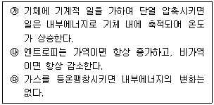
- ㉮
- ㉯
- ㉮, ㉰
- ㉯, ㉰
(정답률: 63%)
38. 폭발위험 예방원칙으로 고려하여야 할 사항에 대한 설명으로 틀린 것은?
- 비일상적 유지관리 활동은 별도의 안전관리시스템에 따라 수행되므로 폭발위험장소를 구분하는 때에는 일상적인 유지관리 활동만을 고려하여 수행한다.
- 가연성가스를 취급하는 시설을 설계하거나 운전절차서를 작성하는 때에는 0종 장소 또는 1종 장소의 수와 범위가 최대가 되도록 한다.
- 폭발성가스 분위기가 존재할 가능성이 있는 경우에는 점화원 주위에서 폭발성가스 분위기가 형성될 가능성 또는 점화원을 제거한다.
- 공정설비가 비정상적으로 운전되는 경우에도 대기로 누출되는 가연성가스의 양이 최소화 되도록 한다.
(정답률: 53%)
39. 연소범위에 대한 일반적인 설명으로 틀린 것은?
- 압력이 높아지면 연소범위는 넓어진다.
- 온도가 올라가면 연소범위는 넓어진다.
- 산소농도가 증가하면 연소범위는 넓어진다.
- 불활성가스의 양이 증가하면 연소범위는 넓어진다.
(정답률: 75%)
40. 증기운폭발(VCE)의 특성에 대한 설명 중 틀린 것은?
- 증기운의 크기가 증가하면 점화확률이 커진다.
- 증기운에 의한 재해는 폭발보다는 화재가 일반적이다.
- 폭발효율이 커서 연소에너지의 대부분이 폭풍파가 전환된다.
- 누출된 가연성증기가 양론비에 가까운 조성의 가연성 혼합기체를 형성하면 폭굉의 가능성이 높아진다.
(정답률: 49%)
3과목: 가스설비
41. 용기용 밸브는 가스 충전구의 형식에 따라 A형, B형, C형의 3종류가 있다. 가스 충전주가 암나사로 되어 있는 것은?
- A형
- B형
- A형, B형
- C형
(정답률: 72%)
42. 비교회전도(비속도, ns)가 가장 적은 펌프는?
- 축류펌프
- 터빈펌프
- 벌류트펌프
- 사류펌프
(정답률: 45%)
43. 고압가스 제조시설의 플레어스택에서 처리가스의 액체 성분을 제거하기 위한 설비는?
- Knock-out drum
- Seal drum
- Flame arrestor
- Pilot burnet
(정답률: 58%)
44. 고압가스 제조 장치 재료에 대한 설명으로 틀린 것은?
- 상온, 상압에서 건조 상태의 염소가스에 탄소강을 사용한다.
- 아세틸렌은 철, 니켈 등의 철족의 금속과 반응하여 금속 카르보닐을 생성한다.
- 9% 니켈강은 액화 천연가스에 대하여 저온취성에 강하다.
- 상온, 상압에서 수증기가 포함된 탄산가스 배관에 18-8 스테인리스강을 사용한다.
(정답률: 56%)
45. 흡입구경이 100mm, 송출구경이 90mm인 원심펌프의 올바른 표시는?
- 100×90 원심펌프
- 90×100 원심펌프
- 100-90 원심펌프
- 90-100 원심펌프
(정답률: 68%)
46. 저압배관에서 압력손실의 원인으로 가장 거리가 먼 것은?
- 마찰저항에 의한 손실
- 배관의 입상에 의한 손실
- 밸브 및 엘보 등 배관 부속품에 의한 손실
- 압력계, 유량계 등 계측기 불량에 의한 손실
(정답률: 69%)
47. 액화석유가스를 사용하고 있던 가스렌지를 도시가스로 전환하려고 한다. 다음 조건으로 도시가스를 사용할 경우 노즐구경은 약 몇 mm 인가?
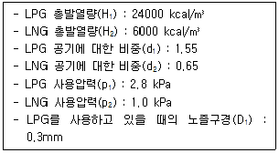
- 0.2
- 0.4
- 0.5
- 0.6
(정답률: 39%)
48. 고압가스 이음매 없는 용기의 밸브 부착부 나사의 치수 측정 방법은?
- 링게이지로 측정한다.
- 평형수준기로 측정한다.
- 플러그게이지로 측정한다.
- 버니어 캘리퍼스로 측정한다.
(정답률: 64%)
49. 이음매 없는 용기와 용접용기의 비교 설명으로 틀린 것은?
- 이음매가 없으면 고압에서 견딜 수 있다.
- 용접용기는 용접으로 인하여 고가이다.
- 만네스만법, 에르하르트식 등이 이음매 없는 용기의 제조법이다.
- 용접용기는 두께공차가 적다.
(정답률: 68%)
50. LNG, 액화산소, 액화질소 저장탱크 설비에 사용되는 단열재의 구비조건에 해당되지 않는 것은?
- 밀도가 클 것
- 열전도도가 작을 것
- 불연성 또는 난연성일 것
- 화학적으로 안정되고 반응성이 적을 것
(정답률: 68%)
51. 압축기의 윤활유에 대한 설명으로 틀린 것은?
- 공기압축기에는 양질의 광유가 사용된다.
- 산소압축기에는 물 또는 15% 이상의 글리세린수가 사용된다.
- 염소압축기에는 진한 황산이 사용된다.
- 염화메탄의 압축기에는 화이트유가 사용된다.
(정답률: 55%)
52. 액화석유가스에 대하여 경고성 냄새가 나는 물질(부취제)의 비율은 공기 중 용량으로 얼마의 상태에서 감지할 수 있도록 혼합하여야 하는가?
- 1/100
- 1/200
- 1/500
- 1/1000
(정답률: 66%)
53. 배관용 강관 중 압력배관용 탄소강관의 기호는?
- SPPH
- SPPS
- SPH
- SPHH
(정답률: 64%)
54. LP가스의 일반적 특성에 대한 설명으로 틀린 것은?
- 증발잠열이 크다.
- 물에 대한 용해성이 크다.
- LP가스는 공기보다 무겁다.
- 액상의 LP가스는 물보다 가볍다.
(정답률: 58%)
55. 중압식 공기분리장치에서 겔 또는 몰리큘라-시브(Molecular Sieve)에 의하여 주로 제거할 수 있는 가스는?
- 아세틸렌
- 염소
- 이산화탄소
- 암모니아
(정답률: 45%)
56. 저온장치용 재료로서 가장 부적당한 것은?
- 구리
- 니켈강
- 알루미늄합금
- 탄소강
(정답률: 52%)
57. 펌프의 서징(surging)현상을 바르기 설명한 것은?
- 유체가 배관 속을 흐르고 있을 때 부분적으로 증기가 발생하는 현상
- 펌프내의 온도변화에 따라 유체가 성분의 변화를 일으켜 펌프에 장애가 생기는 현상
- 배관을 흐르고 있는 액체에 속도를 급격하여 변화시키면 액체에 심한 압력변화가 생기는 현상
- 송출압력과 송출유량 사이에 주기적인 변동이 일어나는 현상
(정답률: 61%)
58. 끓는점이 약 –162℃로서 초저온 저장설비가 필요하며 관리가 다소 복잡한 도시가스의 연료는?
- SNG
- LNG
- LPG
- 나프타
(정답률: 62%)
59. TP(내압시험압력)이 25MPa인 압축가스(질소) 용기의 경우 최고충전압력과 안전밸브 작동압력이 옳게 짝지어진 것은?
- 20MPa, 15MPa
- 15MPa, 20MPa
- 20MPa, 25MPa
- 25MPa, 20MPa
(정답률: 51%)
60. 도시가스 설비 중 압송기의 종류가 아닌 것은?
- 터보형
- 회전형
- 피스톤형
- 막식형
(정답률: 56%)
4과목: 가스안전관리
61. 고압가스용 가스히트펌프 제조 시 사용하는 재료의 허용 전단응력은 설계온도에서 허용 인장응력 값의 몇 %로 하여야 하는가?
- 80%
- 90%
- 110%
- 120%
(정답률: 39%)
62. 고압가스 운반차량에 설치하는 다공성 벌집형 알루미늄합금박판(폭발방지제)의 기준은?
- 두께는 84mm 이상으로 하고, 2~3% 압축하여 설치한다.
- 두께는 84mm 이상으로 하고, 3~4% 압축하여 설치한다.
- 두께는 114mm 이상으로 하고, 2~3% 압축하여 설치한다.
- 두께는 114mm 이상으로 하고, 3~4% 압축하여 설치한다.
(정답률: 46%)
63. 자동차 용기 충전시설에서 충전기 상부에는 닫집 모양의 캐노피를 설치하고 그 면적은 공지 면적의 얼마로 하는가?
- 1/2 이하
- 1/2 이상
- 1/3 이하
- 1/3 이상
(정답률: 47%)
64. 최고충전압력의 정의로서 틀린 것은?
- 압축가스 충전용기(아세틸렌가스 제외)의 경우 35℃에서 용기에 충전할 수 있는 가스의 압력 중 최고압력
- 초저온용기의 경우 상용압력 중 최고압력
- 아세틸렌가스 충전용기의 경우 25℃에서 용기에 충전할 수 있는 가스의 압력 중 최고압력
- 저온용기 외의 용기로서 액화가스를 충전하는 용기의 경우 내압시험 압력의 3/5배의 압력
(정답률: 53%)
65. 가연성가스가 대기 중으로 누출되어 공기와 적절히 혼합된 후 점화가 되어 폭발하는 가스사고의 유형으로, 주로 폭발압력에 의해 구조물이나 인체에 피해를 주며, 대구지하철공사장 폭발사고를 예로 들 수 있는 폭발의 형태는?
- BLEVE(Boiling Liquid Expanding Vapor Explosion)
- 증기운폭발(Vapor Cloud Explosion)
- 분해폭발(Decomposition Explosion)
- 분진폭발(Dust Explosion)
(정답률: 64%)
66. 저장탱크에 의한 LPG 사용시설에서 실시하는 기밀시험에 대한 설명으로 틀린 것은?
- 상용압력 이상의 기체의 압력으로 실시한다.
- 지하매설 배관은 3년마다 기밀시험을 실시한다.
- 기밀시험에 필요한 조치는 안전관리총괄자가 한다.
- 가스누출검지기로 시험하여 누출이 검지되지 않은 경우 합격으로 한다.
(정답률: 54%)
67. 내용적이 100L인 LPG용 용접용기의 스커트 통기 면적의 기준은?
- 100mm2 이상
- 300mm2 이상
- 500mm2 이상
- 1000mm2 이상
(정답률: 47%)
68. 고압가스 제조 시 산소 중 프로판가스의 용량이 전체 용량의 몇 % 이상인 경우 압축하지 아니하는가?
- 1%
- 2%
- 3%
- 4%
(정답률: 49%)
69. 지하에 설치하는 지역정압기에는 시설의 조작을 안전하고 확실하게 하기 위하여 안전조작에 필요한 장소의 조도는 몇 룩스 이상이 되도록 설치하여야 하는가?
- 100룩스
- 150룩스
- 200룩스
- 250룩스
(정답률: 73%)
70. 동·암모니아 시약을 사용한 오르잣트법에서 산소의 순도는 몇 % 이상이어야 하는가?
- 98%
- 98.5%
- 99%
- 99.5%
(정답률: 56%)
71. 고압가스설비를 이음쇠에 의하여 접속할 때에는 상용압력이 몇 MPa 이상이 되는 곳의 나사는 나사게이지로 검사한 것이어야 하는가?
- 9.8 MPa 이상
- 12.8 MPa 이상
- 19.6 MPa 이상
- 23.6 MPa 이상
(정답률: 44%)
72. 염소가스의 제독제로 적당하지 않은 것은?
- 가성소다수용액
- 탄산소다수용액
- 소석회
- 물
(정답률: 69%)
73. 고압가스 저장탱크를 지하에 설치 시 저장탱크실에 사용하는 레디믹스콘크리트의 설계당도 범위에 상한값은?
- 20.6 MPa
- 21.6 MPa
- 22.5 MPa
- 23.5 MPa
(정답률: 33%)
74. 금속플렉시블 호스 제조자가 갖추지 않아도 되는 검사설비는?
- 염수분무시험설비
- 출구압력측정시험설비
- 내압시험설비
- 내구시험설비
(정답률: 49%)
75. 액화석유가스 용기 충전 기준 중 로딩암을 실내에 설치하는 경우 환기구 면적의 합계기준은?
- 바닥면적의 3% 이상
- 바닥면적의 4% 이상
- 바닥면적의 5% 이상
- 바닥면적의 6% 이상
(정답률: 51%)
76. 도시가스제조소의 가스누출통보설비로서 가스경보기 검지부의 설치장소로 옳은 것은?
- 증기, 물방울, 기름 섞인 연기 등의 접촉부위
- 주위의 온도 또는 복사열에 의한 열이 40도 이하가 되는 곳
- 설비 등에 가려져 누출가스의 유통이 원활하지 못한 곳
- 차량 또는 작업등으로 인한 파손 우려가 있는 곳
(정답률: 61%)
77. 독성가스의 운반기준으로 틀린 것은?
- 독성가스 중 가연성가스와 조연성가스는 동일차량 적재함에 운반하지 아니한다.
- 차량의 앞뒤에 붉은 글씨로 “위험고압가스”, “독성가스”라는 경계표시를 한다.
- 허용농도가 100만분의 200 이하인 압축 독성가스 10m3 이상을 운반할 때는 운반책임자를 동승시켜야 한다.
- 허용농도가 100만분의 200 이하인 액화 독성가스 10kg 이상을 운반할 때는 운반책임자를 동승시켜야 한다.
(정답률: 58%)
78. 다음 중 발화원이 될 수 없는 것은?
- 단열압축
- 액체의 감압
- 액체의 유동
- 가스의 분출
(정답률: 57%)
79. 100kPa 의 대기압 하에서 용기 속 기체의 진공압력이 15kPa 이었다. 이 용기 속 기체의 절대압력은 몇 kPa 인가?
- 85
- 90
- 95
- 115
(정답률: 59%)
80. 다음 ( ) 안에 순서대로 들어갈 알맞은 수치는?
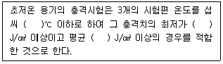
- -100, 10, 20
- -100, 20, 30
- -150, 10, 20
- -150, 20, 30
(정답률: 54%)
5과목: 가스계측기기
81. 다음은 기체크로마토그래프의 크로마토그램이다. t, t1, t2는 무엇을 나타내는가?
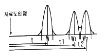
- 이론 단수
- 체류시간
- 분리관의 효율
- 피크의 좌우 변곡점 길이
(정답률: 71%)
82. 기체 크로마토그래피 분석법에서 자유전자 포착성질을 이용하여 전자 친화력이 있는 화합물에만 감응하는 원리를 적용하여 환경물질 분석에 널리 이용되는 검출기는?
- TCD
- FPD
- ECD
- FID
(정답률: 64%)
83. 다음 중 가장 저온에 대하여 연속 사용할 수 있는 열전대 온도계의 형식은?
- T
- R
- S
- L
(정답률: 48%)
84. 직접 체적유량을 측정하는 적산유량계로서 정도(精度)가 높고 고점도의 유체에 적합한 유량계는?
- 용적식 유량계
- 유속식 유량계
- 전자식 유량계
- 면적식 유량계
(정답률: 61%)
85. 절대습도(Absolute humidity)를 가장 바르게 나타낸 것은?
- 습공기 중에 함유되어 있는 건공기 1kg 에 대한 수증기의 중량
- 습공기 중에 함유되어 있는 습공기 1m3에 대한 수증기의 체적
- 기체의 절대온도와 그것과 같은 온도에서의 수증기로 포화된 기체의 습도비
- 존재하는 수증기의 압력과 그것과 같은 온도의 포화수증기압과의 비
(정답률: 64%)
86. 가스계량기는 실측식과 추량식으로 분류된다. 다음 중 실측식이 아닌 것은?
- 건식
- 회전식
- 습식
- 벤투리식
(정답률: 59%)
87. 압력센서인 스트레인게이지의 응용원리는?
- 전압의 변화
- 저항의 변화
- 금속선의 무게 변화
- 금속선의 온도 변화
(정답률: 56%)
88. 반도체식 가스누출 검지기의 특징에 대한 설명으로 옳은 것은?
- 안정성은 떨어지지만 수명이 길다.
- 가연성가스 이외의 가스는 검지할 수 없다.
- 소형·경량화가 가능하며 응답속도가 빠르다.
- 미량가스에 대한 출력이 낮으므로 감도는 좋지 않다.
(정답률: 67%)
89. 비례 제어기로 60℃~80℃ 사이의 범위로 온도를 제어하고자 한다. 목표값이 일정한 값으로 고정된 상태에서 측정된 온도가 73℃~76℃로 변할 때 비례대역은 약 몇 % 인가?
- 10%
- 15%
- 20%
- 25%
(정답률: 54%)
90. 원형 오리피스를 수면에서 10m 인 곳에 설치하여 매분 0.6m3의 물을 분출시킬 때 유량계수 0.6인 오리피스의 지름은 약 몇 cm인가?
- 2.9
- 3.9
- 4.9
- 5.9
(정답률: 40%)
91. 오르자트 가스분석기의 구성이 아닌 것은?
- 컬럼
- 뷰렛
- 피펫
- 수준병
(정답률: 49%)
92. 습식가스미터에 대한 설명으로 틀린 것은?
- 계량이 정확하다.
- 설치공간이 크다.
- 일반 가정용에 주로 사용한다.
- 수위조정 등 관리가 필요하다.
(정답률: 68%)
93. 국제표준규격에서 다루고 있는 파이프(pipe) 안에 삽입되는 차압 1차 장치(primary device)에 속하지 않는 것은?
- nozzle(노즐)
- thermo well(써모 웰)
- venturi nozzle(벤투리 노즐)
- oriflce plate(오리피스 플레이트)
(정답률: 65%)
94. 피토관은 측정이 간단하지만 사용 방법에 따라 오차가 발생하기 쉬우므로 주의가 필요하다. 이에 대한 설명으로 틀린 것은?
- 5m/s 이하인 기체에는 적용하기 곤란하다.
- 흐름에 대하여 충분한 강도를 가져야 한다.
- 피토관 앞에는 관지름 2배 이상의 직관길이를 필요로 한다.
- 피토관 두부를 흐름의 방향에 대하여 평행으로 붙인다.
(정답률: 56%)
95. 가스미터가 규정된 사용공차를 초과할 때의 고장을 무엇이라고 하는가?
- 부동
- 불통
- 기차불량
- 감도불량
(정답률: 66%)
96. 순간적으로 무한대의 입력에 대한 변동하는 출력을 의미하는 응답은?
- 스텐응답
- 직선응답
- 정현응답
- 충격응답
(정답률: 58%)
97. 석유제품에 주로 사용하는 비중 표시 방법은?
- alcohol도
- API도
- Baume도
- Twaddell도
(정답률: 66%)
98. 초산납 10g을 물 90mL로 용해하여 만드는 시험지와 그 검지가스가 바르게 연결된 것은?
- 염화파라듐지 - H2S
- 염화파라듐지 – CO
- 연당지 - H2S
- 연당지 – CO
(정답률: 61%)
99. 헴펠식 가스분석법에서 수소나 메탄은 어떤 방법으로 성분을 분석하는가?
- 흡수법
- 연소법
- 분해법
- 증류법
(정답률: 46%)
100. 다음 중 열선식 유량계에 해당하는 것은?
- 델타식
- 에뉴바식
- 스웰식
- 토마스식
(정답률: 54%)